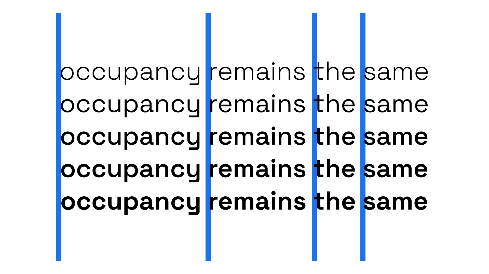

Multiplexed, duplexed, or uniwidth
By Google Fonts Knowledge contributors · Google Fonts Knowledge.
Original article · Source on GitHub · CC BY-SA 4.0. Text, illustrations and existing credits reproduced from the licensed Knowledge repository. Open Shelf adapted the layout and links; these adaptations are also CC BY-SA 4.0. No endorsement implied.
A multiplexed/duplexed/uniwidth typeface is one in which each of its weights takes up exactly the same horizontal space. This is unlike most typefaces, where increasing font weight will usually result in that type taking up more space.

Multiplexed faces can be useful to employ in scenarios where font weights are often switched, such as in screen-based design, where a button might switch to a heavier weight when hovered. Maintaining the same horizontal spacing means the button size can stay the same in both states.